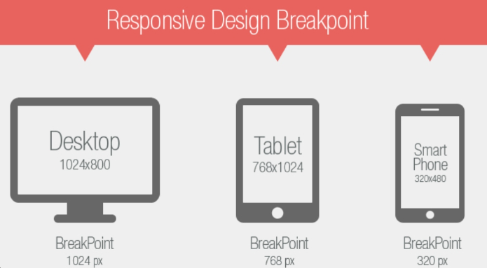

Media Query
Las media queries son una herramienta poderosa en CSS que permite aplicar estilos específicos basados en las características del dispositivo,como el ancho de la pantalla,la altura de la pantalla,la orientación del dispositivo (horizontal o vertical),la resolución del dispositivo y otras características.
Breakpoints
Los breakpoints son puntos específicos en el ancho de la pantalla donde se aplican cambios en el diseño de un sitio web utilizando media queries. Estos puntos marcan el límite en el que el diseño del sitio web necesita ajustarse para adaptarse a diferentes tamaños de pantalla y dispositivos.